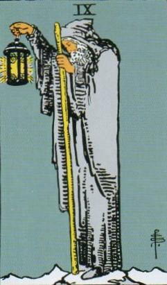
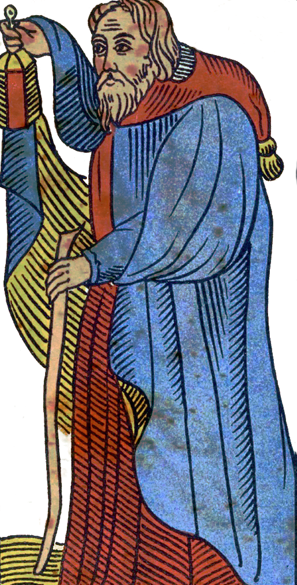
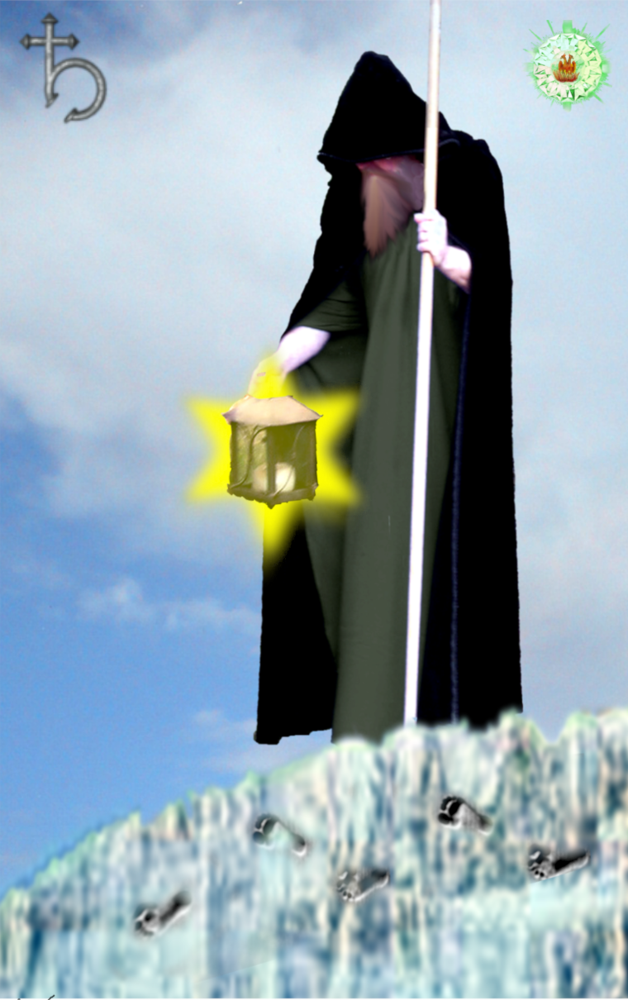
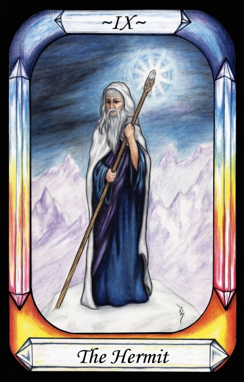
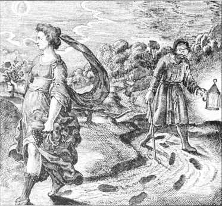
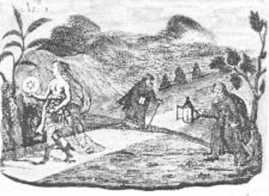

The Hermit




Representation |
Saturn atop snowy Mt Olympus, studies the world of Nature below |
Meaning |
The pursuit of knowledge and understanding of Mother Nature, Natural Philosophy, Science. The way of the mind, rather than that of the body. |
Opposite card |
|
Function |
The Hermit represents Saturn, resulting in the life of mind and spirit, rather than the body. It takes the form of an Alchemist, a student of Natural Philosophy (Science).
[P38] God said … “Let those with a Mind … learn all things that are”.
RWS Imagery
The Hermit has a beard, and wears a bland hooded robe. He holds up a lantern even though it is daylight, and walks with a golden staff. He appears to be looking down, from a high place. The Lanterns light shows as a six-sided Star.
Interpretation of RWS Imagery
The six-pointed Star in the lantern mirrors the “as above, so below” concept from Hermes, one triangle up, the other down.
The Hermit is upon a high mountain top, because he is analogous to Saturn, who resides on snowy Mount Olympus. He looks down on the mortal world below. (This appears to be an addition by Waite/Smith, as a hint to [P66]).
Discussion
Two alchemical images are shown below.
In comparison to Dame Nature the alchemist is a blind, benighted old man. Her footprints are clear enough, but he needs a lamp, stick, and spectacles to follow them.

Figure 11 - Dame Nature and the Alchemist
from Michael Maier's Atalanta Fugens 1617
Alchemists are advised to live apart from others so that they can focus on their work. Albertus Magnus wrote –
Rules for the Practicing Alchemist
… Second. He should reside in a private House in an isolated situation. …
Perhaps this explains why Hermits are traditionally considered to live in isolated caves, mountaintops, etc.
The traits of the alchemist are similar to those of Christian monks, both of whom live intellectual, academic and ascetic lives, devoted to their chosen purpose.

Figure 12 - Another Dame Nature and the Alchemists.
By Hejonagogerus Nugir, printed in the late 18th century in the book by Hans Karl von Ecker Freymäurerische Versammlungsreden der Gold- und Rosenkreutzer des alten Systems Amsterdam, 1779
In Figure 11 above, we can see that Dame Nature carries the six-pointed Star that is often transposed onto the Hermit’s lantern in Tarot Cards. The six-pointed Star is made of two superimposed triangles, one pointing up and one pointing down, as in the Justice card, to indicate the Hermetic mantra of “As above, so below”. The implication of this, in context, is that studying nature on Earth is also a path to understanding the divine, and supports the Gnostic view that the path to God comes from understanding.
The similarity between the words Hermetic and Hermit is of course interesting. Is the Hermit a direct lexical reference to students of Hermes, who was the father of alchemy?